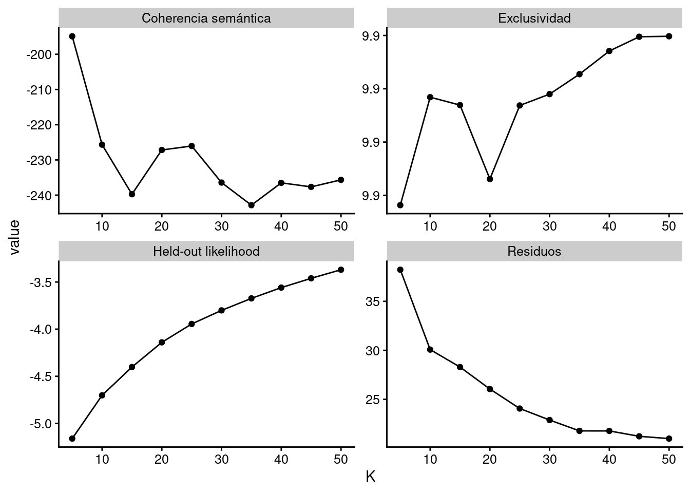

Capítulo 13 Análisis cuantitativo de textos políticos
Sebastián Huneeus52
Lecturas recomendadas
Salganik, M. J. (2017). Bit by Bit: Social Research in the Digital Age. Princeton University Press, Princeton, NJ.
Silge, J. and Robinson, D. (2017). Text Mining with R: A Tidy Approach. O’Reilly, Sebastopol, CA.
Steinert-Threlkeld, Z. C. (2018). Twitter as Data. Cambridge University Press, Cambridge.
Paquetes que necesitas instalar
tidyverse(Wickham 2019b),paqueteadp(Urdinez and Cruz 2020),lubridate(Spinu, Grolemund, and Wickham 2020),skimr(Waring et al. 2020),ggwordcloud(Le Pennec and Slowikowski 2019),tidytext(Robinson and Silge 2020),stopwords(Benoit, Muhr, and Watanabe 2020),quanteda(Benoit, Watanabe, Wang, Nulty, et al. 2020),quanteda.textmodels(Benoit, Watanabe, Wang, Müller, et al. 2020),qdapRegex(Rinker 2017),stm(M. Roberts, Stewart, and Tingley 2019),tidystm(Johannesson 2020),remotes(Hester et al. 2020).
Este capítulo está dividido en tres secciones, las cuales emplean diferentes estrategias para analizar datos textuales de Twitter. La Subsección 13.1 cubre la exploración del análisis de texto, la Subsección 13.2.3 trabaja con Wordfish (una técnica para posicionar textos a lo largo de un eje), mientras que la Subsección 13.3 cubre el Structural Topic Modeling (STM), que nos ayuda a descubrir temas subyacentes en los datos de texto.
En el estudio de políticas contenciosas, #olafeminista, #metoo, #blacklivesmatter y #niunamenos son hashtags que fueron virales y cuentan una rica historia sobre el activismo y la protesta en redes sociales. Usaremos como caso de estudio un ciclo de protesta llamado Ola Feminista, que ocurrió en Chile desde Mayo hasta Junio del 2018. El ciclo de protesta feminista denunció inequidades de género estructurales, comenzó como una mobilización de estudiantes en Santiago, y creció –gradualmente– expandiéndose a demandas más amplias, provenientes de organizaciones feministas y de trabajadores en todo Chile.53
En la primera mitad de este capítulo, podrás aprender cómo usar estadísticas descriptivas básicas para entender cómo los formuladores de políticas usan Twitter. Analizaremos cómo los diputados en Chile utilizaron hashtags relacionados al género durante la #olafeminista. Analizaremos variaciones simples de frecuencia en el uso de hashtags para abordar diferentes niveles de compromiso con el debate en línea sobre cuestiones feministas y de género.
En la segunda mitad del capítulo, aprenderás cómo usar Wordfish y Structural Topic Modeling (STM), dos técnicas recientes de procesamiento de lenguaje natural (PNL por sus siglas en inglés) utilizadas en ciencia política para minería de datos sin supervisión. Mientras que Wordfish nos permitirá posicionar las coaliciones políticas a lo largo de un eje ideológico izquierda-derecha, el STM nos permitirá identificar los temas –o grupos de palabras– más regulares y ver cómo esos tópicos están correlacionados a una variable de interés. En nuestro ejemplo, exploraremos la correlación entre el género del diputado y el uso de ciertos hashtags. En general, estas técnicas son grandes herramientas para ganar conocimiento sobre cómo las coaliciones y los formuladores de políticas participan digitalmente en una conversación política.
En este capítulo, utilizarás una base de datos original con variables de identificación para los diputados y diputadas, como lo son el nombre y apellido, distrito, partido político, edad, entre otras. Las variables de identificación fueron extraídas desde la página web oficial de la Cámara de Diputados. Para la extracción de datos desde Twitter usamos el paquete rtweet, que nos permite acceder libremente a la API de Twitter para descargar información de los usuarios, fechas y hashtags (ver Capítulo 12).
En este tipo de análisis, la tarea más difícil es reunir y limpiar la base de datos para que se vea “tidy” (ordenada). Afortunadamente, la API de Twitter y paquetes como rtweet o twitter son muy útiles para manejar la información descargada de una manera simple y ordenada.54
13.1 Análisis de hashtags políticos
¿Qué son los hashtags (#) y cómo están relacionado con la política? Los hashtags son textos que conectan usuarios en una conversación digital. Analizarlos nos ayuda a entender cómo, cuándo y por quién estas conversaciones están teniendo lugar. Además, los hashtags pueden ayudar a la movilización política. De hecho, existe literatura que aborda la protesta social a través de la viralización de hashtags, como los trabajos recientes que estudian el hashtag-feminismo (Trott 2018) y hashtags de activismo de minorías raciales, como el #blacklivesmatter (Ince, Rojas, and Davis 2017).55
En general, usar un hashtag indica interés en un tópico, independiente de que uno esté a favor o en contra de él. Por lo tanto, este primer ejercicio no intenta medir los niveles de apoyo, sino que este análisis nos permite identificar aquellos representantes que discuten temas de género. La organización de la sección es la siguiente. La primera parte es la exploración de la base de datos y un análisis descriptivo bivariado de las frecuencias de los #. En la segunda parte, hacemos una comparación por género. Tercero, comparamos el uso de hashtags por coalición política. En la cuarta parte, veremos la variación semanal en el uso de algunos #. En la quinta parte, esta variación temporal será separada por género.
13.1.1 Exploración de datos de Twitter
Tras cargar la base de datos poltweets, la exploramos con skimr::skim(poltweets), como muestra la Figura 13.1. Con esta función puedes hacer una exploración rápida del tamaño de la base de datos, el número de observaciones y variables, y el tipo de variable (carácter, número entero, factor, etc.). También podemos ver el número de valores perdidos, el número de categorías o valores que la variable factor asume (n_unique), así como la dispersión estadística para las variables cuantitativas (min, max, cuantiles, media y desviación estándar). skimr::skim() es un buen primer paso que nos permite diagnosticar los datos con los que trabajaremos. En el caso de nuestra base de datos poltweets, podemos ver que hay 7 variables de tipo “caracter” y una de tipo “POSIXct”, que también ayuda a trabajar con fechas.

Figura 13.1: Skim de nuestra base de datos.
Mira cómo el 75,4% de las filas en la base de datos corresponden a tweets hechos por congresistas. También notamos que hay 29 congresistas mujeres y 93 congresistas hombres en el conjunto de datos.
# among tweets:
poltweets %>% count(genero) %>% mutate(freq = n / sum(n))
## # A tibble: 2 x 3
## genero n freq
## <chr> <int> <dbl>
## 1 Femenino 4595 0.246
## 2 Masculino 14063 0.754
# deputies' characteristics:
poltweets %>%
distinct(nombre_usuario, genero)%>%
count(genero)
## # A tibble: 2 x 2
## genero n
## <chr> <int>
## 1 Femenino 29
## 2 Masculino 93Tras cargar la base de datos y dar un rápido vistazo al tamaño y las variables incluídas, debemos extraer los hashtags de los tweets utilizando la función unnest_tokens() de tidytext, creando una base de datos “tokenizada” con una fila por hashtag. Luego, simplemente filtramos todas las filas que empiecen con un hashtag (#), dejándonos con una base de datos de un-hashtag-por-fila.
poltweets_hashtags <- poltweets %>%
unnest_tokens(output = "hashtag", input = "texto", token = "tweets") %>%
filter(str_starts(hashtag, "#"))Queremos ver las diferencias en cómo los representantes, partidos y coaliciones participan en el debate político sobre género. Para hacerlo, creamos una nueva variable dummy que toma el valor “1” cada vez que la variable de cadena de caracter coincide con alguna de las expresiones regulares como “femi”, “niunamenos”, “aborto”, “mujer” y “genero”:
poltweets_hashtags <- poltweets_hashtags %>%
mutate(fem_hashtag = case_when(str_detect(hashtag, "femi") ~ 1,
str_detect(hashtag, "niunamenos") ~ 1,
str_detect(hashtag, "aborto") ~ 1,
str_detect(hashtag, "mujer") ~ 1,
str_detect(hashtag, "genero")~ 1,
TRUE ~ 0)) %>%
mutate(fem_hashtag = as.character(fem_hashtag))Vemos que esta es una buena medida para capturar hashtags relacionados al género y el feminismo. Observa que sólo el 4.1% de las filas contienen hashtag relacionados con género bajo este criterio y que los tres hashtags más frecuentes son #aborto3causales, #interpelacionaborto3causales y #leydeidentidaddegeneroahora.56
13.1.2 Diagnóstico visual
Hagamos algunos análisis bivariados agrupando por número de tweets por mes, coalición y género (Figuras 13.2, 13.3, y 13.4).
Figura 13.2: Total number of tweets by month.
Figura 13.3: Total number of tweets by coalicion.

Figura 13.4: Total number of tweets by genero.
13.1.4 Wordclouds (Nubes de palabras)
Una rápida e intuitiva manera de representar frecuencias de palabras son las wordclouds (nubes de palabras). Estas representaciones gráficas permiten posicionar en el centro y con letras más grandes los casos que tienen mayor frecuencia. Para eso, utilizamos el paquete ggwordcloud para los 35 hashtags más comunes. Tras crear una base de datos de conteo, emplearemos el geom_text_wordcloud() con los mapeos estéticos “label”, “tamaño” y “color”. En la inspección visual vemos los tres hashtags sobre género más utilizados: #aborto3causales, #leydeidentidaddegeneroahora e #interpelacionaborto3causales (Figure 13.5).
library(ggwordcloud)
data_hashtags_wordcloud <- poltweets_hashtags %>%
count(hashtag, fem_hashtag) %>%
arrange(-n) %>%
slice(1:35)ggplot(data_hashtags_wordcloud,
aes(label = hashtag, size = n, color = fem_hashtag)) +
geom_text_wordcloud() +
scale_size_area(max_size = 8) + # we set a maximum size for the text
theme_void()Figura 13.5: Wordcloud of the most common hashtags.
13.1.5 Nubes de palabras por grupos
Utilizando la función facet_wrap(), las nubes de palabras se pueden dividir por variables de interés. Clasificando por género y coalición, inmediatamente vemos cómo hashtags como #olafeminista, #agendamujer y #educacionnosexista aparecen sólo entre las cuentas de Twitter de las congresistas. Al enfrentar coaliciones, nos damos cuenta que los tweets del Frente Amplio (FA) usan una alta proporción de hashtags relacionados con género, mientras que la coalición oficialista Chile Vamos (ChV) no usa ningún hashtag (Ver Figuras 13.6 and 13.7).
ggplot(poltweets_hashtags %>%
count(hashtag, genero, fem_hashtag) %>%
arrange(-n) %>%
group_by(genero) %>%
slice(1:20),
aes(label = hashtag, size = n, color = fem_hashtag)) +
geom_text_wordcloud() +
scale_size_area(max_size = 6) +
facet_wrap(~genero)Figura 13.6: Wordclouds by genero.
ggplot(poltweets_hashtags %>%
count(hashtag, coalicion, fem_hashtag) %>%
arrange(-n) %>%
group_by(coalicion) %>%
slice(1:20),
aes(label = hashtag, size = n, color = fem_hashtag)) +
geom_text_wordcloud() +
scale_size_area(max_size = 6) +
facet_wrap(~coalicion, nrow = 3)Figura 13.7: Wordclouds by coalicion.
13.1.6 Gráficos de barras
Ahora clasificaremos la frecuencia de los hashtags por género. Generaremos este gráfico en dos pasos. Primero, creamos una tabla con 15 de los hashtags más utilizados entre mujeres y hombres. Luego, crearemos un gráfico de barras añadiendo el argumento geom_col() a la función ggplot(). Como resultado, veremos los hashtags #aborto3causales y #leydeidentidaddegeneroahora aparecer sólo en las cuentas de las congresistas, mientras que ninguno de estos hashtags relacionados con género aparecen en cuentas masculinas (Figura 13.8).
plot_15 <- poltweets_hashtags %>%
group_by(genero) %>%
count(hashtag, fem_hashtag) %>%
arrange(-n) %>%
slice(1:15)ggplot(data = plot_15,
mapping = aes(x = n, y = reorder_within(hashtag, n, genero),
fill = fem_hashtag)) +
geom_col()+
labs(x = "Frequency", y = "", fill = "Hashtag feminista") +
facet_wrap(~genero, scales = "free", nrow = 2) +
scale_y_reordered()
Figura 13.8: Most frequent hashtags by congresswomen (April 1 - June 30).
Ahora, calculamos y graficamos el estadístico tf-idf, destinado a medir cuán importante es una palabra para un documento en una colección de documentos. Este estadístico es una combinación de la frecuencia del término (tf por sus siglas en inglés) y la frecuencia de documento inversa del término (idf por sus siglas en inglés), que disminuye su valor en términos usados comunmente y lo incrementa para palabras que no se utilizan mucho a lo largo de la colección de documentos. Observamos que, cuando separamos por grupos, dos hashtags con los más altos tf_idf en el Frente Amplio están relacionados con género (#leydeidentidaddegeneroahora).
hash_tf_idf <- poltweets_hashtags %>%
# calculate tf-idf:
count(coalicion, hashtag, fem_hashtag, sort = T) %>%
bind_tf_idf(term = hashtag, document = coalicion, n = n) %>%
# get 10 most distinctive hashtags per coalicion:
arrange(-tf_idf) %>%
group_by(coalicion) %>%
slice(1:10)ggplot(data = hash_tf_idf,
mapping = aes(x = tf_idf,
y = reorder_within(hashtag, tf_idf, coalicion),
fill = fem_hashtag)) +
geom_col() +
labs(x = "tf_idf", y = "", fill = "Hashtag feminista") +
facet_wrap(~coalicion, nrow = 3, scales = "free") +
scale_y_reordered()Figura 13.9: tf-idf statistic, intended to measure how important a word is to a document.
13.1.7 Variación temporal en el uso de hashtags
Ciertos hashtags pueden aumentar o disminuir su uso a través del tiempo, dependiendo del contexto político. Exploraremos la frecuencia semanal de los dos hashtags más frecuentes en nuestro ejemplo. Utilizando el paquete lubridate, que trabaja con datos en formato fecha, podemos buscar por tendencias de tiempo. En nuestra base de datos tenemos una variable con una fecha: creado_en. Usando esta variable, podemos confirmar que hubo un “peak” de tweets entre el 27 de mayo y el 2 de junio (ver Figura 13.10).
hashtags_weekly <- poltweets_hashtags %>%
mutate(week = floor_date(creado_en, "week", week_start = 1)) %>%
filter(hashtag %in% c("#aborto3causales",
"#leydeidentidaddegeneroahora")) %>%
count(hashtag, week)
ggplot(data = hashtags_weekly,
mapping = aes(x = week, y = n,
linetype = hashtag, group = hashtag)) +
geom_point() +
geom_line() +
labs(x = "Semana", y = "Uso total semanal", linetype = "Hashtag")
Figura 13.10: Temporal variation in the usage of hashtags.
13.1.8 Para resumir
Los hashtags pueden decir mucho sobre un debate político. Podemos observar algunas diferencias evidentes entre el uso de “#” sobre género. Las congresistas usaron muchos más hashtags como #olafeminista y #agendamujer que sus contrapartes masculinas. En cuanto a las coaliciones, las de izquierda (Frente Amplio y La Fuerza de la Mayoría) los utilizaron más. Sobre la variación temporal, la mayor intensidad de menciones de temas relacionados al género ocurrieron durante la semana del 14 al 20 de mayo, la semana previa al Discurso de Cuenta Pública (21 de mayo), lo que también coincidió con manifestaciones en diversas ciudades del país. Vemos que, en términos relativos, las congresistas estuvieron cinco veces más interesadas en el movimiento feminista, ya que usaron el hashtag #agendamujer 5 veces más que sus contrapartes masculinas durante la semana del 14 al 20 de mayo.
¿Qué aprendiste en esta sección? Te mostramos cómo usar Twitter para analizar fenómenos políticos. Una vez tengas tu propia base de datos, puedes seguir nuestro análisis paso por paso. Esto será útil como punto de partida para diseños explicativos que se pregunten sobre las causas del alineamiento político en diferentes agendas.
13.2 Wordfish
En esta sección del capítulo, emplearemos dos técnicas NLP comúnmente usadas en ciencia política para minería de datos sin supervisión: Wordfish y Structural Topic Models (STM). Ambos modelos de procesamiento de texto nos permiten resumir muchos documentos diferentes de manera rápida y económica y pueden complementar otras mediciones descriptivas como la frecuencia de palabras o de hashtags. Como no están supervisados, las clasificaciones se realizarán sin utilizar ningún código o diccionario previo (Welbers, Van Atteveldt, and Benoit 2017). Esto tiene la ventaja de ahorrar trabajo en la creación manual de código, así como evitar el sesgo propio de quien hace el código. Otra ventaja es que no son dependientes del lenguaje de origen, es decir, en principio, se pueden utilizar en cualquier lenguaje. Ambos métodos utilizan el enfoque de “bolsa de palabras” (“bag of words”), ya que el orden de las palabras dentro del texto no altera el análisis. Los parámetros estimados por cada algoritmo pueden ser graficados con ggplot2, lo que facilita la interpretación visual de los resultados.
La organización de la sección tiene la siguiente estructura, Primero, haremos una pequeña limpieza de datos, como remover “palabras vacías” (stopwords) (con un diccionario de stopwords, en este caso, incorporado en Quanteda), caracteres y números extraños. Luego, aplicaremos el algoritmo Wordfish en los tweets de los parlamentarios chilenos durante el mismo periodo que en la sección anterior. En la segunda parte, haremos un modelamiento de tópicos con STM en el mismo corpus.
13.2.1 Inspección y limpieza de datos
Volvemos a cargar la base de datos poltweets y notamos que ahora contiene una serie de variables que son necesarias para el análisis de texto. Ahora usaremos los tweets completos, no sólo los tokens. También necesitamos las variables id, necesaria para que cada tweet coincida con quien lo twitteó.
library(quanteda) # dfm and corpus
library(quanteda.textmodels) # wordfish
library(qdapRegex) # remove non ascii charactersEmpecemos siempre haciendo un escaneo rápido a los datos, como hicimos en la sección previa. El análisis descriptivo nos permite resumir características básicas de la base de datos, como el tipo de las variables y el número de caracteres por observación, la cantidad de datos perdidos (NA) y el rango de unidades de texto contenidas en cada variable. Exploramos la variable de caracteres que contiene los tweets. Al usar el comando glimpse() tenemos una previsualización de cada variable, específicamente del tipo y una vista previa de las primeras observaciones.
glimpse(poltweets)
## Rows: 18,658
## Columns: 8
## $ id <chr> "1", "2", "3", "4", "5", "6", "7", "8", "9", "1…
## $ nombre_usuario <chr> "vladomirosevic", "vladomirosevic", "vladomiros…
## $ nombres <chr> "VLADO", "VLADO", "VLADO", "VLADO", "VLADO", "V…
## $ apellido <chr> "MIROSEVIC", "MIROSEVIC", "MIROSEVIC", "MIROSEV…
## $ creado_en <dttm> 2018-04-11 16:19:43, 2018-04-11 16:17:56, 2018…
## $ texto <chr> "@MarioEyza1 @bcnchile @IntendenciaXV @Insulza …
## $ coalicion <chr> "FA", "FA", "FA", "FA", "FA", "FA", "FA", "FA",…
## $ genero <chr> "Masculino", "Masculino", "Masculino", "Masculi…13.2.2 Pre-procesamiento
Antes de aplicar el algoritmo, debemos pre-procesar los textos. Esto significa utilizar expresiones regulares para lograr un texto más limpio y ordenado. Utilizaremos expresiones regulares para remover caracteres extraños, nombres de usuario, URLs, emojis, además de cambiarlo todo a minúsculas.
# function to remove accents
f_remove_accent <- function(x){
x %>%
str_replace_all("á", "a") %>%
str_replace_all("é", "e") %>%
str_replace_all("í", "i") %>%
str_replace_all("ó", "o") %>%
str_replace_all("ú", "u") %>%
str_replace_all("ñ", "n") # also replace "ñ", a common letter in Spanish
}
# now pre-process the dataset:
poltweets <- poltweets %>%
mutate(texto = texto %>%
# delete user names (which start with @):
str_remove("\\@[[:alnum:]]+") %>%
# delete URLs:
str_remove_all("http[\\w[:punct:]]+") %>%
# all text to lowercase:
str_to_lower() %>%
# remove special characters:
str_remove_all("[\\d\\.,_\\@]+") %>%
f_remove_accent() %>%
# remove emojis
rm_non_ascii()
)Una vez el texto está limpio, queremos agrupar de acuerdo con la variable para la comparación. Como estamos interesados en obtener las estimaciones en el nivel de coalición, agrupamos los textos por coalición. Ahora, cada coalición es un documento en la base de datos. Al ordenar por coaliciones, debes colocar los niveles del factor de forma que se parezca a un eje izquierda-derecha.
by_coalition <- poltweets %>%
group_by(coalicion) %>%
summarize(texto = str_c(texto, collapse = " ")) %>%
ungroup() %>%
# reorder the variable:
mutate(coalicion = fct_relevel(as.factor(coalicion), "FA", "LFM", "ChV"))Para modelar con Quanteda, primero transformamos nuestra base de datos a formato Corpus, y luego a formato DFM (Document-feature Matrix). Esto significa transformar cada documento en filas y las “características” como columnas. Hicimos la transformación de la base de datos agrupada por coaliciones hacia formato Corpus y luego a DFM. Adicionalmente, aprovechamos el uso de un comando que ayudará eliminar números, puntuaciones, símbolos y palabras vacías (conjunciones, artículos, etc.)
# Corpus format
poltweets_corpus <- corpus(by_coalition, text_field = "texto")
# DFM format
poltweets_dfm <- dfm(poltweets_corpus,
remove_numbers = T, remove_punct = T,
remove_symbols = T, remove = stopwords("spa"))Utilizando dfm_trim(), eliminamos aquellas palabras con una frecuencia igual o menor que el quinto percentil y aquellas con una frecuencia igual o mayor que el percentil 95. De esta manera, eliminamos palabras inusuales que están ubicadas en los extremos de la distribución de frecuencias, ya que pueden sesgar los resultados del algoritmo.
13.2.3 Wordfish
Wordfish es un algoritmo que permite hacer una ecala unidimensional de un conjunto de textos (Slapin and Proksch 2008). Es decir, sirve para ordenar los documentos en un eje unidimensional según cuán similar son entre sí en el uso de ciertas palabras clave. Este modelamiento asume que el número de veces que una palabra es mencionada en un documento sigue una distribución de Poisson. Este modelo es extremadamente simple ya que el número de veces que una palabra aparecerá es estimado por un único parámetro λ, que es tanto la media como la varianza de la distribución de probabilidad Poisson.
La distribución es la siguiente (Proksch and Slapin 2010):
\[ Wordcount_{ij} \sim Poisson(\lambda_{ij}) \]
where
\[ \lambda_{ij} = exp(\alpha_i + \psi_j + \beta_j * \omega_i) \]
El conteo de una palabra \(j\) para el documento \(i\) sigue una distribución de Poisson con parámetro \(λ\) para la palabra \(j\) y el documento \(i\). El modelo estima el parámetro \(\lambda_{ij}\), que es la función del término \(\alpha_i\) (el cual es un efecto fijado para los documentos) y el término \(\psi_j\), que es un efecto fijado para la palabra \(j\) - Al ingresar estos efectos fijados, se descuenta el hecho de que algunas palabras pueden aparecer más veces que otras. El parámetro de interés es \(\beta_j\), que captura la importancia de cada palabra \(j\) para discriminar las posiciones de \(i\) en el eje latente \(X\). Por lo tanto, los documentos pueden ser agrupados basado en cuán similares son entre ellos, utilizando ciertas palabras.
Wordfish tiene dos supuestos fundamentales, primero, que las palabras siempre tienen el mismo significado dentro del texto. Segundo, que los textos son ordenados por una dimensión latente \(X\), que es un eje que articula la diferenciación ideológica de los documentos (Slapin and Proksch 2008). Sin embargo, la validez de esta suposición se mantiene en la medida en que el método es robusto con otras mediciones y que el corpus de textos incluidos en el análisis son representativos de la dimensión.
En ciencia política, alguno de los trabajos que han utilizado este algoritmo con Twitter es el de Andrea Ceron (2017), en el cual utiliza las estimaciones de Wordfish para predecir la heterogeneidad ideológica dentro de los partidos políticos italianos, para ver qué legislador será elegido como ministro y la probabilidad de que abandonen el partido.
Aplicamos el algoritmo Wordfish al objeto de clase DFM, específicamente a Quanteda. Definimos la dirección del parámetro \(\theta\) -el equivalente de \(\beta\)-, en este caso, el documento 3 (FA) es el polo positivo y el documento 1 (CHV) es el polo negativo en la dimensión ideológica estimada. También, usamos el argumento sparse = T, que también nos permite trabajar con grandes cantidades de datos, ahorrando poder computacional.
Graficamos en la Figura 13.11:
df_wf <- tibble(
# coalicion labels:
coalicion = wf[["x"]]@docvars[["coalicion"]],
# then we extract thetas and their SEs from the mode object:
theta = wf$theta,
lower = wf$theta - 1.96 * wf$se.theta,
upper = wf$theta + 1.96 * wf$se.theta
)
df_wf
## # A tibble: 3 x 4
## coalicion theta lower upper
## <fct> <dbl> <dbl> <dbl>
## 1 ChV 1.07 1.07 1.08
## 2 FA -0.905 -0.912 -0.897
## 3 LFM -0.169 -0.180 -0.158
ggplot(data = df_wf,
mapping = aes(x = theta, y = fct_reorder(coalicion, theta),
xmin = lower, xmax = upper)) +
geom_point() +
geom_linerange() +
# add vertical line at x=0:
geom_vline(xintercept = 0, linetype = "dashed") +
scale_x_continuous(limits = c(-1.2, 1.2)) +
labs(y = "")Figura 13.11: Classification of coalitions by ideological positioning
Vemos que las coaliciones están agrupadas a lo largo de una división izquierda-derecha. El parámetro de interés \(\theta\), equivalente al parámetro beta, es el parámetro que discrimina las posiciones de los documentos a partir de la frecuencia de las palabras. Vemos que este parámetro es consistente con cómo las coaliciones están agrupadas políticamente. El más a la derecha, Chile Vamos (ChV), con un \(\theta\) de 1.07, se encuentra en un extremo del eje x, por el contrario, el de más a la izquierda, Frente Amplio (FA), con un \(\theta\) de -0.91, está ubicado en el extremo opuesto.
Ejercicio 13A. Puedes repetir el Wordfish, pero ahora invierte la dirección del parámetro \(\theta\) en el objeto
wf. ¿Cómo cambia la distribución de los documentos al invertir la dirección del parámetro? Ahora repite el ejercicio agrupando por partidos políticos.
13.2.4 ¿Qué aprendimos de Wordfish?
Usando los mismos tweets que en la sección anterior, vimos cómo los mensajes provenientes de los miembros del congreso eran consistentes con una división ideológica, ordenada en un eje izquierda-derecha. En particular, concluimos que las coaliciones Frente Amplio y Chile Vamos están en extremos opuestos con respecto a sus tweets durante el ciclo de protesta chileno. Sorprendentemente, el algoritmo es capaz de ubicar a las coaliciones chilenas en un eje izquierda-derecha tomando como entrada solo los tweets de los parlamentarios durante los ciclos de protesta, sin ningún tipo de etiquetado manual de los textos. Wordfish es una herramienta poderosa para ser utilizada como un método de posicionamiento espacial, que se suma al repertorio de otras mediciones de posición política, como las estimaciones de puntos ideales bayesianos (Barberá 2015), roll call y cosponsorship (Alemán et al. 2009).
13.3 Structural Topic Modeling (STM)
El modelado de temas es un método computacional para identificar automáticamente agrupaciones de palabras relevantes en grandes volúmenes de textos. Una de las aplicaciones más populares en ciencia política es la Latent Dirichlet Allocation (LDA), desarrollada por Blei, Ng, and Jordan (2003) y explicada de manera didáctica por David Blei en la Machine Learning Summer School 2009 de la Universidad de Cambridge.
Otro desarrollo útil es el modelado de temas estructurales (STM por sus siglas en inglés), una técnica de NLP no supervisada para bucear grandes corpus de textos. La principal innovación del STM es que incorpora metadatos en el modelado del tema, por lo que permite a los investigadores descubrir temas y estimar su relación con las covariables, mejorando la calidad de las inferencias y la interpretabilidad de los resultados. El algoritmo STM está disponible en el paquete stm creado por Molly Roberts, Brandon Stewart y Dustin Tingley. Para una revisión más detallada de este método, hay una gran cantidad de material en el sitio oficial del paquete.
En esta sección, analizaremos un subconjunto de nuestros tweets para encontrar los temas más relevantes y ver cómo se correlacionan con las variables de género y coalición. Siguiendo el ejemplo de Julia Silge, primero haremos todo el preprocesamiento utilizando herramientas “tidy”, para luego cargar una base de datos corregida a stm.
13.3.1 Pre-procesamiento
Solo utilizaremos tweets de mayo de 2018:
Como se mencionó anteriormente, debemos comenzar preprocesando los textos. Recuerde que en la subsección anterior eliminamos caracteres extraños del texto. A continuación, crearemos una versión “tokenizada” de poltweets_onemonth, donde cada fila es una palabra contenida en el tweet original, sumado a una columna que nos dice el número total de veces que cada palabra se dice en todo el conjunto de datos (solo guardamos las palabras que se mencionan diez o más veces). Justo después de hacer eso, eliminaremos las palabras vacías (conjunciones, artículos, etc.) usando el paquete stopwords. Tenga en cuenta que también emplearemos un diccionario “personalizado” de palabras clave, compuesto por los nombres y apellidos únicos de los diputados.
# obtain unique names and surnames of deputies
nombres_apellido <- c(poltweets$nombres, poltweets$apellido) %>%
na.omit() %>%
unique() %>%
str_to_lower() %>%
f_remove_accent() %>%
str_split(" ") %>%
flatten_chr()
poltweets_words <- poltweets_onemonth %>%
unnest_tokens(word, texto, "words") %>%
# remove stop words:
filter(!word %in% stopwords::stopwords("es", "stopwords-iso")) %>%
# remove names/surnames of deputies:
filter(!word %in% nombres_apellido) %>%
# just keep words that are present ten or more times
add_count(word) %>%
filter(n > 10)Eso es todo en términos de pre-procesamiento! A continuación, transformaremos el conjunto de datos tokenizado en un objeto stm utilizando las funciones cast_dfm() y convert().
Para estimar la relación de los temas y las covariables del documento, debemos agregar los valores de covariable en el objeto poltweets_stm$meta. El objeto metadata es un marco de datos que contiene los metadatos para cada documento en el objeto stm, que luego se puede usar como el documento “prevalence” -o metadatos-. Tenga en cuenta que para crear el objeto stm_meta, es necesario unirlo mediante la variable id, una columna que contiene un identificador único para cada tweet.
metadata <- tibble(id = names(poltweets_stm$documents)) %>%
left_join(distinct(poltweets, id, coalicion, genero),
by = "id") %>%
as.data.frame()
poltweets_stm$meta <- metadataAhora tenemos todos los ingredientes necesarios para estimar nuestro structural topic model (modelo de tema estructural), almacenados en el objeto poltweets_stm:
13.3.2 Diagnósticos
Para estimar un stm, es necesario definir de antemano el número de temas (\(K\)). Sin embargo, no hay un número “correcto” de temas, por lo que los \(K\) apropiados deberían decidirse mirando los datos en sí (M. E. Roberts, Stewart, and Tingley 2019). Para hacer eso, debemos entrenar varios modelos y cálculos de diagnósticos que nos ayudarán a decidir. ¿Qué rango de \(K\) debemos considerar? En el manual del paquete (M. Roberts, Stewart, and Tingley 2019), los autores ofrecen los siguientes consejos:
Para corpus cortos centrados en temas muy específicos (como experimentos de encuestas), 3-10 temas es un rango de inicio útil. Para corporaciones pequeñas (de unos cientos a miles), 5-50 temas es un buen lugar para comenzar. Más allá de estas pautas generales, todo dependerá de la aplicación. Aplicaciones anteriores en ciencia política que han trabajado con corpus medianos (10 mil a 100 mil documentos) han encontrado que 60-100 temas funcionan bien. Para grandes corpus" 100 temas es un tamaño predeterminado útil. (pág. 61)
Nuestro conjunto de datos tiene 5,647 documentos, por lo tanto, trataremos de 5 a 50 temas. Podemos usar la función searchK() del paquete stm para calcular los diagnósticos relevantes, que almacenaremos en el objetostm_search. Este proceso es computacionalmente costoso y puede tomar varios minutos en una computadora moderna. Si no desea esperar, puede cargar el objeto del paquete del libro (data(stm_search)) y continuar.
stm_search <- searchK(documents = poltweets_stm$documents,
vocab = poltweets_stm$vocab,
data = poltweets_stm$meta,
# our covariates, mentioned above:
prevalence = ~ coalicion + genero,
# 5-50 topics range:
K = seq(5, 50, by = 5),
# use all our available cores (be careful!):
cores = parallel::detectCores(),
# a seed to reproduce the analysis:
heldout.seed = 123)A continuación, ordenaremos nuestro objeto recién creado y graficaremos sus resultados usando ggplot2:
diagnostics <- stm_search$results %>%
# get a tidy structure to plot:
mutate_all(flatten_dbl) %>%
pivot_longer(-K, names_to = "diagnostic", values_to = "value") %>%
# we will only use some diagnostics:
filter(diagnostic %in% c("exclus", "heldout", "residual", "semcoh")) %>%
# give better names to the diagnostics:
mutate(diagnostic = case_when(
diagnostic == "exclus" ~ "Exclusividad",
diagnostic == "heldout" ~ "Held-out likelihood",
diagnostic == "residual" ~ "Residuos",
diagnostic == "semcoh" ~ "Coherencia semántica"
))ggplot(diagnostics, aes(x = K, y = value)) +
geom_point() +
geom_line() +
facet_wrap(~diagnostic, scales = "free")
Aquí presentamos cuatro de los diagnósticos obtenidos con searchK(). Tanto la probabilidad retenida como los residuos (características de los modelos, más información en M. E. Roberts, Stewart, and Tingley (2019)) parecen sugerir que aumentar los temas es el enfoque correcto. Sin embargo, en nuestra experiencia, la coherencia semántica y la exclusividad son los mejores indicadores de la adecuación de \(K\). La coherencia semántica es quizás el diagnóstico que se correlaciona principalmente con el juicio humano sobre la “calidad del tema” [@ robertsStmPackageStructural2019], es decir, temas que incluyen términos que tienen sentido temático. Sin embargo, Roberts et al. (2014) sostiene que la coherencia semántica se puede lograr fácilmente con pocos temas, por lo tanto, se debe considerar conjuntamente con la “exclusividad”, esto es, cuán distintivos son los términos del tema en comparación con otros temas.
Siguiendo estas definiciones e inspeccionando el gráfico anterior anterior, los modelos con K = 10 y K = 25 parecen buenos contendientes. Vamos a estimarlos por separado (si no deseas esperar, puedes volver a cargar los objetos de nuestro paquete paqueteadp):
stm_model_k10 <- stm(documents = poltweets_stm$documents,
vocab = poltweets_stm$vocab,
data = poltweets_stm$meta,
prevalence = ~ coalicion + genero,
K = 10)
stm_model_k25 <- stm(documents = poltweets_stm$documents,
vocab = poltweets_stm$vocab,
data = poltweets_stm$meta,
prevalence = ~ coalicion + genero,
K = 25)¿Cómo debemos decidir entre estas dos especificaciones? La exclusividad y la coherencia semántica presentadas en la gráfica anterior son medidas de resumen, por lo que quizás podamos obtener más valor al observar valores específicos para cada tema en los dos modelos. En la siguiente Figura 13.12 graficamos la coherencia semántica frente a la exclusividad, como lo sugiere M. E. Roberts, Stewart, and Tingley (2019). En un mundo ideal, nos gustaría que todos los temas sean lo más semánticamente coherentes y exclusivos posible. Si bien no estamos en ese mundo ideal, parece que los temas del modelo K = 10 son mejores en este sentido, ya que el modelo K = 25 tiene bastantes temas que se posicionan como valores atípicos, pues tienen baja coherencia semántica o baja exclusividad (¡o ambas!) Por lo tanto, continuaremos nuestro análisis utilizando el modelo K = 10.
# obtener exclusividad y coherencia semántica de los tópicos dentro de los modelos
diagnostics2 <- tibble(
exclusivity = c(exclusivity(stm_model_k10), exclusivity(stm_model_k25)),
semantic_coherence = c(
semanticCoherence(stm_model_k10, documents = poltweets_stm$documents),
semanticCoherence(stm_model_k25, documents = poltweets_stm$documents)
),
k = c(rep("K=10", 10), rep("K=25", 25))
)ggplot(data = diagnostics2,
mapping = aes(x = semantic_coherence, y = exclusivity, shape = k)) +
geom_point(size = 2) +
labs(x = "Semantic coherence", y = "Exclusivity", shape = "")Figura 13.12: Coherencia semántica y exclusividad de los tópicos en los dos modelos.
13.3.3 Análisis
Hemos elegido un modelo con 10 temas. ¿Cómo se ve? Podemos obtener los términos principales de cada tema (más sobre lo que esto significa en un segundo) y graficarlos, como se muestra en la Figura 13.13. El gráfico también ordenará los temas en función de su proporción esperada dentro de todo el conjunto de tweets.
model_terms <- tibble(
topic = as.character(1:10),
# obtain the top seven terms:
terms = labelTopics(stm_model_k10)$prob %>%
t() %>%
as_tibble() %>%
map_chr(str_c, collapse = ", "),
# expected proportion of each topic in the whole set of tweets:
expected_proportion = colMeans(stm_model_k10$theta)
) %>%
arrange(-expected_proportion)ggplot(data = model_terms,
mapping = aes(x = expected_proportion,
y = fct_reorder(topic, expected_proportion),
label = terms)) +
geom_col() +
geom_text(size = 3, hjust = "inward") + # to use space better
labs(x = "Expected proportion", y = "Topic")Figura 13.13: Tópicos y sus términos más relevantes.
Tenga en cuenta que el Tema 2 es el que se refiere a género, donde se incluyen las palabras “mujeres”, “derechos” y “género”. Podemos usar labelTopics () para obtener más términos que caracterizan este tema, como se muestra en el resultado a continuación. Los términos con mayor probabilidad son los mismos que utilizamos en el gráfico anterior, los más comunes en el tema. Otra medida interesante es “FREX”, que selecciona términos que son distintivos de este tema, en comparación con otros (en este caso, las palabras son las mismas). Por último, “Lift” (elevación) y “Score” (puntuación) se importan de otros paquetes (M. Roberts, Stewart, and Tingley 2019), y también pueden ser útiles al describir un tema. En este caso, observe cómo los términos principales de “Lift” incluyen “olafeminista”, uno de los hashtags que discutimos anteriormente.
## Topic 2 Top Words:
##
## Highest Prob:
## mujeres, presidente, derechos, protocolo, temas, apoyo, genero
## FREX:
## mujeres, presidente, derechos, protocolo, temas, apoyo, genero
## Lift:
## equidad, olafeminista, utilidades, violencia, apoyo, dejo, discriminacion
## Score:
## mujeres, presidente, derechos, protocolo, genero, apoyo, temas
## NULLCon este tema en mente, ahora podemos analizar su relación con los metadatos, en nuestro caso, el género y la coalición de los diputados: ¿es más probable que las mujeres y los políticos de izquierda twiteen sobre la ola feminista? Como dijimos antes, la capacidad de estimar estas relaciones tema-covariable es una ventaja central de los modelos de temas estructurales. El primer paso es usar estimateEffect() para obtener los coeficientes del modelo:
stm_effects <- estimateEffect(
# c(1:10) means that we want coefficients for all topics in our model
formula = c(1:10) ~ coalicion + genero,
stmobj = stm_model_k10,
metadata = poltweets_stm$meta
)A continuación, usamos el paquete tidystm57 para extraer los efectos del modelo, a través de extract.estimateEffect(). Comencemos con el género. Cuando la covariable de interés tiene dos niveles, el argumento método = "diferencia" obtendrá el cambio en la prevalencia (“prevalence”) del tema, cambiando de un valor específico a otro. En nuestro caso, la columna “estimate” en el objeto effect_gender es el cambio en la prevalencia del tema cuando se comparan congresistas mujeres con congresistas hombres. Existe una estimación relativamente grande y positiva para el Tema 2 (como se esperaba), que es significativa en los niveles de confianza habituales. Cabe señalar que, para la prevalencia de otros temas (4, 7, 10), el género parece tener un efecto opuesto (aunque más pequeño), un hallazgo que podría ser útil en investigaciones futuras.
effect_gender <- extract.estimateEffect(x = stm_effects,
covariate = "genero",
method = "difference",
cov.value1 = "Femenino",
cov.value2 = "Masculino",
model = stm_model_k10)
effect_gender %>% arrange(-estimate)
## method topic covariate covariate.value estimate std.error
## 1 difference 2 genero Femenino-Masculino 0.052 0.0095
## 2 difference 8 genero Femenino-Masculino 0.015 0.0092
## ci.level ci.lower ci.upper
## 1 0.95 0.0339 0.071
## 2 0.95 -0.0032 0.033
## label
## 1 Topic 2 (Covariate Level Femenino Compared to Masculino)
## 2 Topic 8 (Covariate Level Femenino Compared to Masculino)
## [ reached 'max' / getOption("max.print") -- omitted 8 rows ]Es posible graficar estos resultados usando ggplot2, una gran ventaja del paquete tidystm, que se muestra en la Figura 13.14:
ggplot(effect_gender,
aes(x = estimate, xmin = ci.lower, xmax = ci.upper,
y = fct_reorder(as.character(topic), estimate))) +
# añadir línea de efecto nulo
geom_vline(xintercept = 0, linetype = "dashed") +
geom_point() +
geom_linerange() +
# central la línea de efecto nulo
scale_x_continuous(limits = c(-0.075, 0.075)) +
labs(x = "Estadístico para la diferencia Femenino - Masculino",
y = "Tópico")Figura 13.14: Effect of genero on topic prevalence.
Podemos repetir el análisis anterior para la otra covariable en nuestro modelo, obteniendo la diferencia en la prevalencia del tema entre la coalición de más izquierda (FA o Frente Amplio) y la coalición de más derecha (ChV o Chile Vamos). Como se esperaba, el modelo estima que los políticos de izquierda tendían -probabilísticamente- a twitear más sobre la ola feminista (Tema 2).
effect_coalition_diff <- extract.estimateEffect(x = stm_effects,
covariate = "coalicion",
method = "difference",
cov.value1 = "FA",
cov.value2 = "ChV",
model = stm_model_k10)
effect_coalition_diff %>%
filter(topic == 2)
## method topic covariate covariate.value estimate std.error ci.level
## 1 difference 2 coalicion FA-ChV 0.041 0.0099 0.95
## ci.lower ci.upper label
## 1 0.022 0.061 Topic 2 (Covariate Level FA Compared to ChV)Ejercicio 13B. Grafica los efectos de la covariable de coalición, mostrando la diferencia entre la coalición de derecha (ChV) y las otras (FA y LFM).
Ejercicio 13C. Agregue los 7 términos principales para cada tema a la Figura 13.14. *Consejo: puede usar
left_join()para fusionar las dos bases de datos de interés.
13.3.4 Observaciones finales
Las comunicaciones políticas en ciclos de protesta tienen claras implicancias en el dominio digital. En esta sección hemos demostrado que el análisis de texto automatizado de tweets políticos captura variaciones en la forma en que se twittea, particularmente, en cómo las congresistas parecen estar más correlacionadas con ciertos temas, en este caso el tema 2, relacionado con género. STM es una de las técnicas de NLP más recientes utilizadas en ciencia política para minería de texto sin supervisión. Sin embargo, a pesar del claro beneficio del uso de la minería de texto, estas técnicas deben usarse con precaución ya que la interpretabilidad de los temas es sensible en muchas decisiones como la K (número de temas para un modelo dado) y la limpieza del texto.
E-mail: lshuneeus@uc.cl↩︎
Para un entendimiento más profundo del alcance de este movimiento, recomendamos el libro editado por la periodista Faride Zerán, “Mayo Feminista: La rebelión contra el patriarcado” (2018).↩︎
Para aprender más sobre algunas grandes estrategias de investigación en ciencias sociales utilizando datos de Twitter, te recomendamos el capítulo “Observing Behavior” del libro “Bit by Bit” de Matthew Salganik (2017, ch. 2).↩︎
Una lectura esencial sobre cómo se puede estudiar una crisis política latinoamericana a través de Twitter es Political Anatomy of Twitter in Argentina (2015) sobre la estructura de red digital generada tras la muerte del fiscal Alberto Nisman en 2015.↩︎
El hashtag
#aborto3causalesestá relacionado con un debate nacional de larga data: entre 1989 y 2017, Chile tenía una de las políticas de aborto más restrictivas del mundo, criminalizando su práctica sin excepción. Desde 2017, el aborto en Chile es legal en los siguientes casos: cuando la vida de la madre está en riesgo, cuando el feto no sobrevivirá el embarazo y durante las primeras 12 semanas de embarazos (14 semanas si la mujer es menor de 14 años) en caso de violación. El 12 de febrero de 2018, la Norma Técnica fue promulgada en el Diario Oficial de la Ley 21.030, que despenalizó el aborto en tres causales. La norma fue amenazada con derogación y modificación, lo que generó una gran cantidad de controversia.↩︎tidystmnecesita ser instalado desde GitHub:remotes::install_github("mikajoh/tidystm").↩︎